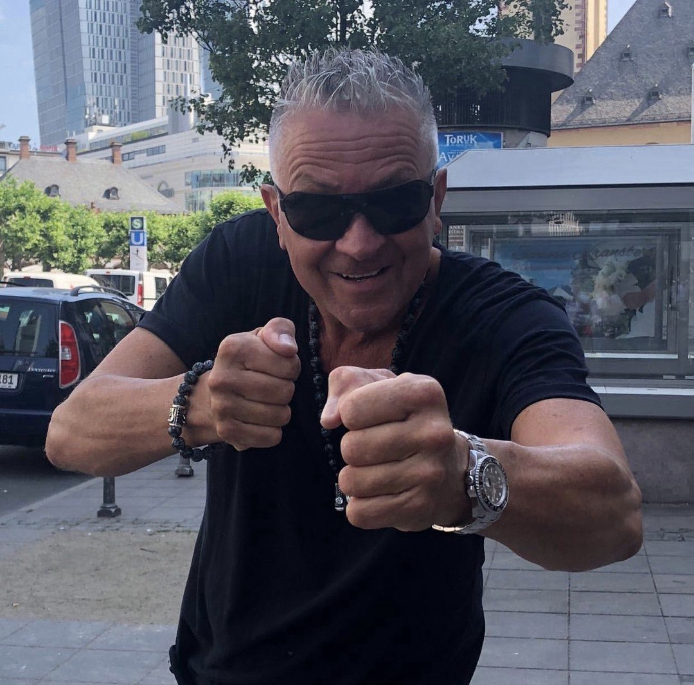
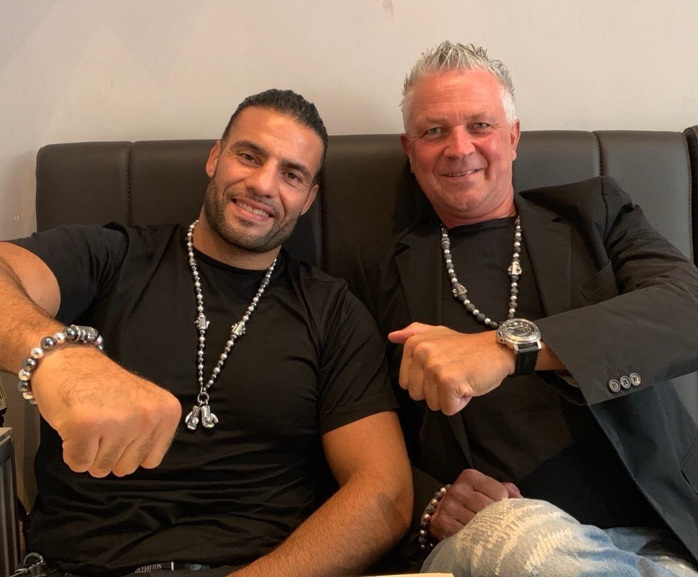
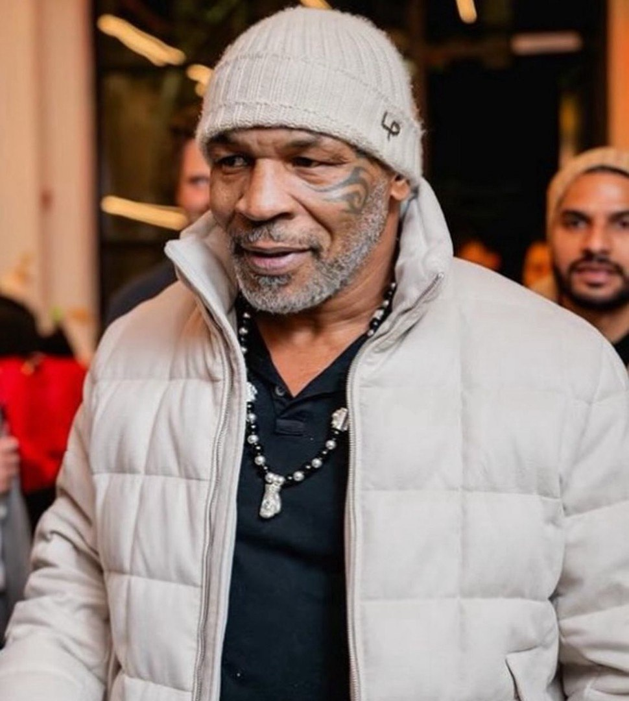

01
Ketten & Anhänger
Individuelle Schmuckstücke für Alltag, Sammlung und besondere Anlässe.
Harald Wolf liebt den großen Auftritt, besondere Steine und Schmuckstücke, die genauso eigenwillig sind wie ihre Träger.
Mit Harald sprechenHarald Wolf ist kein stiller Verkäufer im Hintergrund. Er kennt seine Steine, liebt den Austausch und bringt Energie, Haltung und Persönlichkeit in jedes Gespräch.
Beratung und Besichtigung sind nach vorheriger Vereinbarung möglich. Eine feste Geschäftsadresse wird ergänzt, sobald sie feststeht.
Individuelle Schmuckstücke für Alltag, Sammlung und besondere Anlässe.
Ausgewählte Steine und Mineralien mit eigener Farbe, Struktur und Ausstrahlung.
Produkte aus einem besonderen Gestein, persönlich ausgewählt und erklärt.
Diese Galerie zeigt Harald Wolf persönlich: direkt, präsent und mit Freude an auffälligen Schmuckstücken. Die Bilder und Videos stammen aus dem bereitgestellten Material.



Harald Wolf ist als Schmuck- und Mineralienhändler auf Edelsteinveranstaltungen aktiv. Seine Auswahl reicht von tragbaren Schmuckstücken bis zu besonderen Mineralien und Einzelstücken.
Über seine Arbeit und Schungit-Auswahl berichtete die Frankfurter Rundschau im Oktober 2024.
Artikel lesen →Schreib Harald Wolf direkt. Fragen zu Schmuck, Mineralien oder einzelnen Stücken sind jederzeit willkommen.
hw24@mac.com